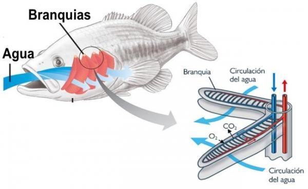
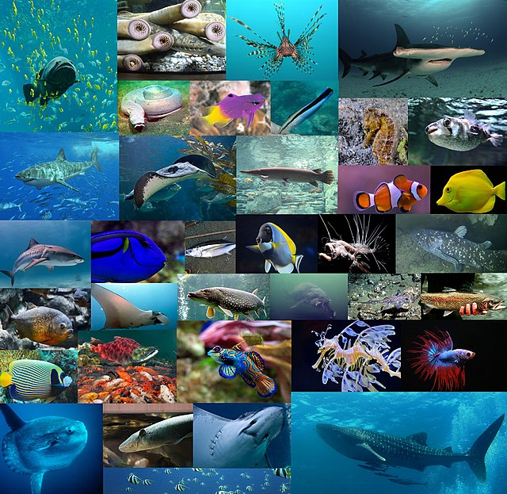

Los peces son un grupo de animales vertebrados primariamente acuáticos con respiración por branquias, los cuales suelen estar recubiertos por escamas y están dotados de aletas, que permiten su movimiento continuo en los medios acuáticos. Los peces son abundantes tanto en agua salada como en agua dulce, pudiéndose encontrar especies desde los arroyos de montaña así como en lo más profundo del océano.
El grupo de los peces se define como todos los vertebrados que no son tetrápodos (vertebrados con cuatro patas) y no por la posesión de características derivadas comunes. Hoy en día las especies pertenecen a tres grupos: peces sin mandíbulas (lampreas), peces cartilaginosos (tiburones y rayas) y peces óseos.
Una característica distintiva de los peces es la respiración a través de branquias, órganos
especializados que les permiten extraer oxígeno del agua. Al abrir y cerrar la boca, los peces toman
agua y la fuerzan a pasar a través de las branquias, donde se produce el intercambio de gases.
Además, la mayoría de los peces tienen aletas que les permiten moverse con facilidad y control en el
agua,
mientras que las aletas caudales, o cola, les brindan la propulsión necesaria para nadar.

 Los peces presentan una gran variedad de formas, tamaños y colores. Algunos tienen cuerpos delgados y alargados, ideales para desplazarse rápidamente en aguas abiertas, mientras que otros tienen formas más achatadas y adaptaciones especiales para vivir en arrecifes o fondos marinos. Además, los peces exhiben una amplia gama de colores y patrones, que pueden servir para camuflaje, atracción de pareja o señalización de peligro.
La alimentación de los peces también varía según la especie. Algunos peces son carnívoros y se alimentan de otros animales acuáticos, como pequeños invertebrados o peces más pequeños. Otros son herbívoros y se alimentan principalmente de algas y plantas acuáticas. También existen peces omnívoros que consumen tanto materia vegetal como animal.
La reproducción en peces puede ser ovípara o vivípara. En la reproducción ovípara, la hembra pone huevos
que son fertilizados externamente por el macho y estos pueden ser depositados en un lugar seguro o
dejados a la deriva en el agua. En la reproducción vivípara, las crías se desarrollan dentro del cuerpo
de la madre y son paridas vivas.
Algunas especies de peces son hermafroditas, lo que significa que pueden cambiar de sexo durante su
vida. En ciertos casos, si la hembra muere, un macho juvenil se
convierte en hembra para continuar la reproducción.
Los peces desempeñan un papel crucial en los ecosistemas acuáticos. Son importantes en la cadena alimentaria, ya que muchas especies se alimentan de ellos. También ayudan a controlar las poblaciones de organismos acuáticos y contribuyen a la salud de los ecosistemas al eliminar materia orgánica en descomposición.